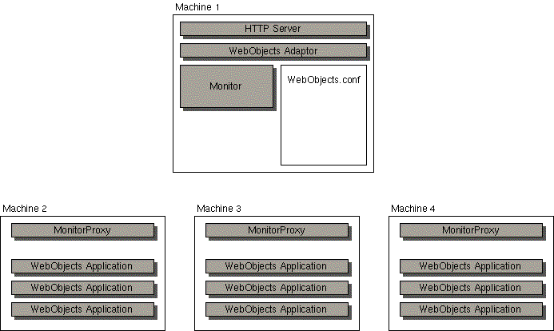

Table of Contents
Table of Contents  Next Section
Table of Contents
Next Section
Table of Contents  Previous Section
Previous Section
To start up Monitor on any other system, do the following:
> cd /NextLibrary/WOApps/Monitor.woa > Monitor
The Monitor application launches in your default web browser and displays this screen:
Monitor can communicate with WebObjects applications running on remote hosts; however to launch applications on remote hosts it uses a lightweight daemon named MonitorProxy. For example, the following figure shows a WebObjects site spread across four machines. One machine contains the HTTP server, and the other three machines contain WebObjects applications. You would run the Monitor application on the machine containing the HTTP server. That Monitor application would use the MonitorProxy daemons on the other three machines to launch applications. All other communication goes directly between Monitor and the WebObjects application.

To start up MonitorProxy on Windows NT, do the following:
> cd $NEXT_ROOT/NextLibrary/WOApps/Monitor.woa > MonitorProxy
Note: If you're running Monitor on a Solaris or HP-UX machine, you must start up MonitorProxy on that machine as well. As you'll learn later, Monitor requires the local MonitorProxy to start up applications on Solaris and HP-UX.
Table of Contents Next Section